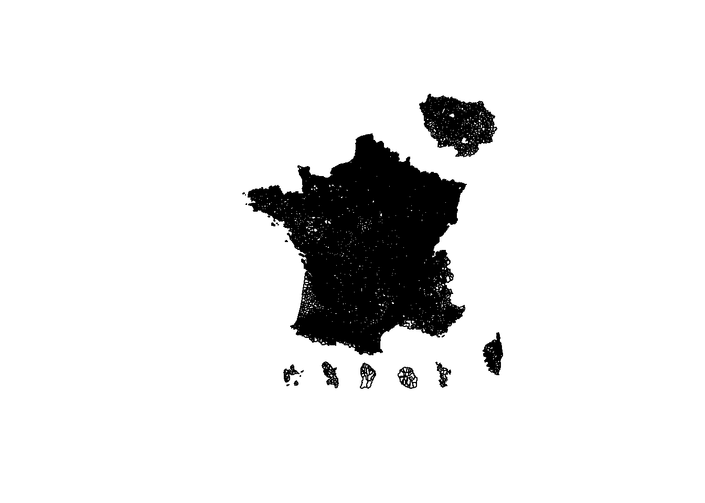
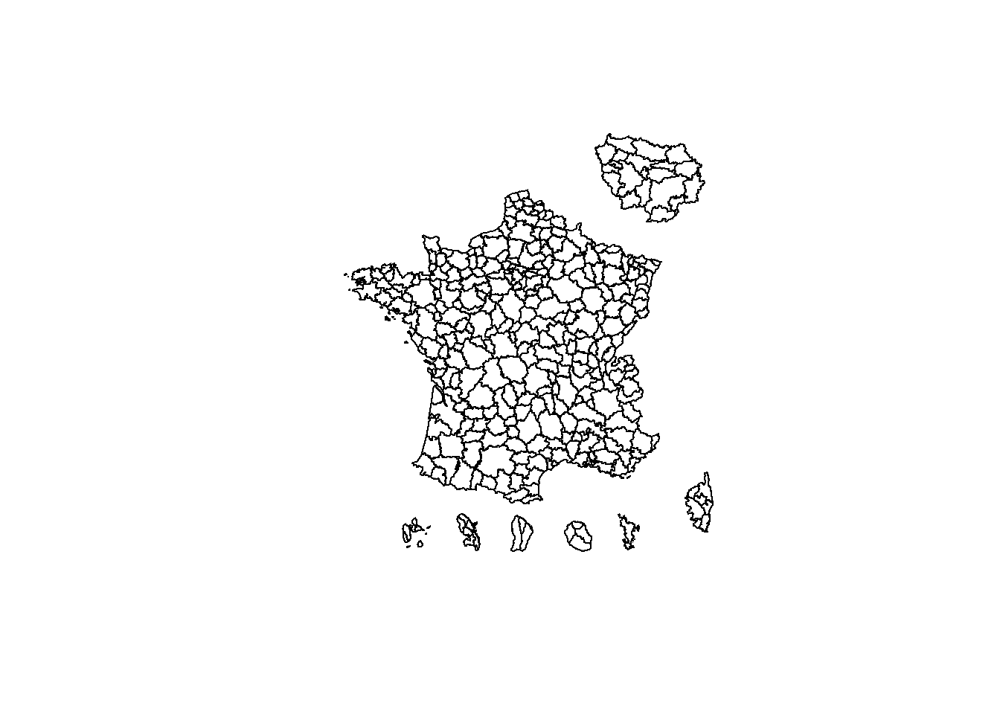
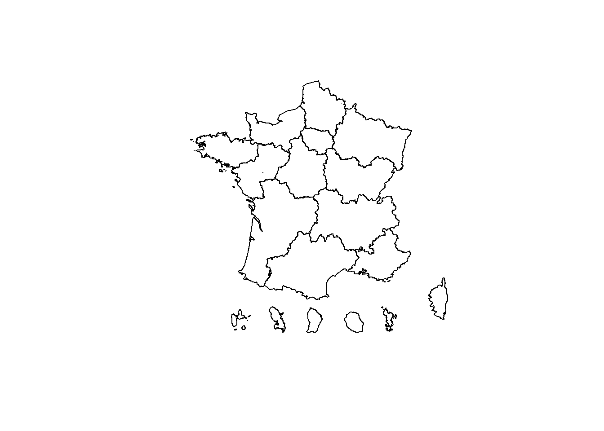
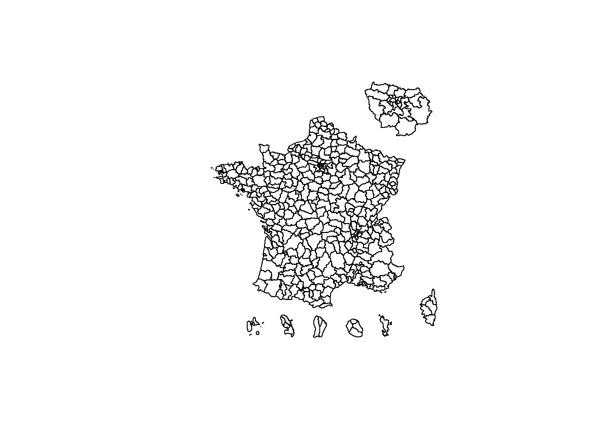
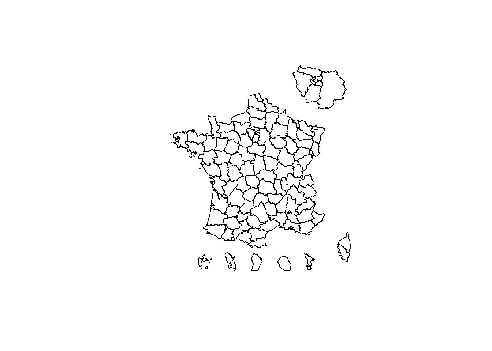
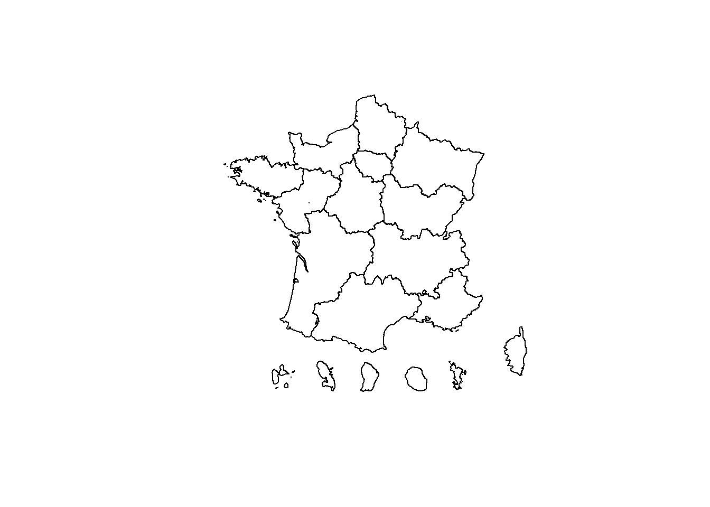
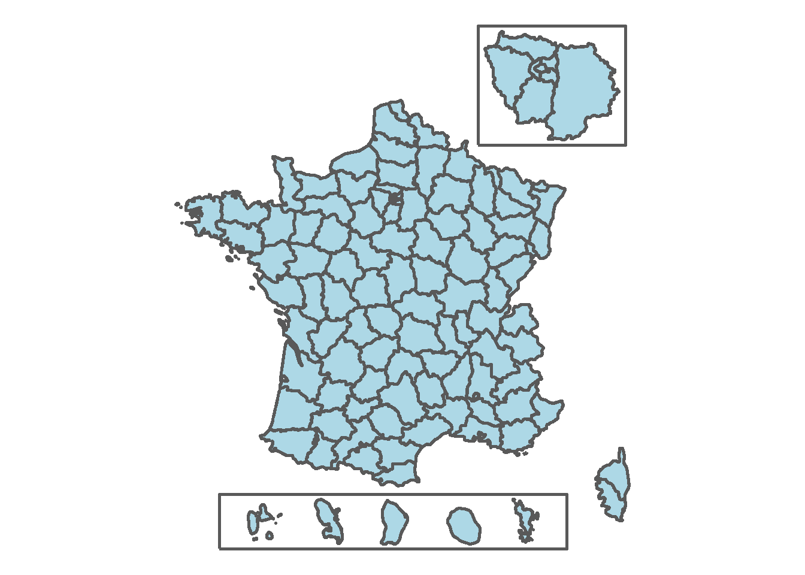

A Annexe - Fonds de carte
Cet annexe détaille la construction des fonds de carte mis à disposition.
A.1 Fond de carte communal
On part d’un fond de carte communal, en géographie 2019, à disposition ici :https://github.com/antuki/CARTElette
Il a été travaillé par Kim Antunez, de l’Insee, à partir de fonds de carte de l’IGN.
A.1.1 Chargement
Il est directement disponible dans le package CARTElette et on le charge ainsi.
## Reading layer `FR_COM_2019' from data source `D:\r-cartostat\data\shp\init\FR_COM_2019.shp' using driver `ESRI Shapefile'
## Simple feature collection with 34970 features and 11 fields
## geometry type: MULTIPOLYGON
## dimension: XY
## bbox: xmin: 99040 ymin: 5988964 xmax: 1242444 ymax: 7110479
## epsg (SRID): NA
## proj4string: +proj=lcc +lat_1=49 +lat_2=44 +lat_0=46.5 +lon_0=3 +x_0=700000 +y_0=6600000 +ellps=GRS80 +units=m +no_defs
A.1.2 Gestion des DOMs
Ce fond de carte inclut les DOMs à des positions qui ne sont pas géographiquement correctes mais qui les placent au même niveau que la France métropolitaine.
On conservera donc ces positions.
A.1.3 Gestion de l’Île-de-France
On s’inspire de la façon dont sont déplacées les DOMs pour réaliser une copie zoomée de l’Île-de-France, qu’on placera en haut à droite.
Cette copie est associée à une variable zoom_idf qui vaut 1 si on est sur le zoom, 0 sinon.
shp_commune_idf <- shp_commune %>%
filter(INSEE_REG == "11")
shp_commune_idf0 <- shp_commune %>%
filter(INSEE_REG == "11") %>%
mutate(zoom_idf = "1")
# paramètres
deplace <- c(-200000, 870000)
zoom <- 2.2
centroid_idf <- shp_commune %>%
filter(INSEE_DEP == "75") %>%
st_centroid() %>%
st_coordinates()
# déplacement
shp_commune_idf <-
st_sf(
shp_commune_idf0 %>% st_drop_geometry(),
geometry = ((st_geometry(shp_commune_idf0) - deplace) * zoom + deplace - centroid_idf) ,
crs = st_crs(shp_commune_idf0)
)
# jointure
shp_commune_zoom_idf <- shp_commune %>%
mutate(zoom_idf = "0") %>%
rbind(shp_commune_idf)
A.2 Tables de passages géographiques
A partir de fond de carte communal et des tables de passage vers les différents niveaux, de la bonne année, on reconstruit les différents fonds de carte.
Pour une partie des niveaux (département et région), ils sont déjà dans la table communale.
Pour les bassins, on a davantage de communes dans la table de passage, pour gérer d’éventuels problèmes d’historiques. Cela n’impacte pas le recodage puisqu’on n’a pas de tous.
passage_commune_bassin <- read_xlsx("data/passage/passage_commune_bassin_bmo.xlsx")
passage_commune_ze <- read_xlsx("data/passage/passage_commune_ze.xlsx")Le code département se calcule simplement à partir des 2 premiers chiffres du code commune (3 pour les DOMs). Exemple :
shp_commune %>%
st_drop_geometry() %>%
mutate(code_dep = if_else(
str_sub(INSEE_COM, 1, 2) == "97",
str_sub(INSEE_COM, 1, 3),
str_sub(INSEE_COM, 1, 2)
)) %>%
head(5)## # A tibble: 5 x 12
## ID STATUT INSEE_COM INSEE_ARR INSEE_DEP INSEE_REG CODE_EPCI NOM_COM_M POPULATION TYPE NOM_COM code_dep
## <fct> <fct> <fct> <fct> <fct> <fct> <fct> <fct> <dbl> <fct> <fct> <chr>
## 1 COMM~ Commu~ 32216 3 32 76 200072320 LOURTIES~ 152 COM Lourti~ 32
## 2 COMM~ Commu~ 47033 3 47 75 200036523 BOUDY DE~ 412 COM Boudy-~ 47
## 3 COMM~ Commu~ 32009 3 32 76 243200425 ARMOUS E~ 86 COM Armous~ 32
## 4 COMM~ Commu~ 38225 1 38 84 243801024 AUTRANS ~ 2969 COM Autran~ 38
## 5 COMM~ Commu~ 62890 4 62 32 200044030 WILLEMAN 182 COM Willem~ 62Le passage de la région peut se faire à partir du code département. Une table de passage est inclus.
A.3 Agrégation des niveaux
Il reste à les agréger.
# bassin BMO
shp_bassin_bmo <- shp_commune_zoom_idf %>%
left_join(passage_commune_bassin, by = c("INSEE_COM" = "code_commune")) %>%
group_by(code_bassin_bmo, lib_bassin_bmo, zoom_idf) %>%
summarise() %>%
ungroup()
# ze
shp_ze <- shp_commune_zoom_idf %>%
left_join(passage_commune_ze, by = c("INSEE_COM" = "code_commune")) %>%
group_by(code_ze, lib_ze, zoom_idf) %>%
summarise() %>%
ungroup()
# dep
shp_dep <- shp_commune_zoom_idf %>%
group_by(INSEE_REG, INSEE_DEP, zoom_idf) %>%
summarise() %>%
ungroup()
# reg - sans le zoom
shp_reg <- shp_dep %>%
filter(zoom_idf == "0") %>%
group_by(INSEE_REG) %>%
summarise() %>%
ungroup()


A.4 Simplification des contours
Ces fonds de cartes ont un niveau de détail très important sur les contours. En contrepartie, ils sont plus lourds et ce détail joue parfois contre l’information qu’on veut représenter.
On va donc chercher à les simplifier davantage à l’aide du package smoothr et d’un lissage en kernel. On fait une étape de simplification avec st_simplify() avant le lissage.
library(smoothr)
smooth_fr <- function(data, tol = 1800, sm = 0.8){
data %>%
st_simplify(dTolerance = tol, preserveTopology = TRUE) %>%
smooth(method = "ksmooth", smoothness = sm)
}
shp_bassin_bmo_simpl <- smooth_fr(shp_bassin_bmo)
shp_ze_simpl <- smooth_fr(shp_ze)
shp_dep_simpl <- smooth_fr(shp_dep)
shp_reg_simpl <- smooth_fr(shp_reg)


A.5 Export des fonds de carte
Puis à les sauvegarder. On en profite pour uniformiser les noms des variables.
On a des warnings car parfois, la spécification des shapefiles coupe les noms de variables. Il faudra donc faire attention.
# commune
shp_commune_zoom_idf %>%
rename(
code_com = INSEE_COM,
lib_com = NOM_COM,
code_dep = INSEE_DEP,
code_reg = INSEE_REG
) %>%
select(code_com, lib_com, code_dep, code_reg, zoom_idf, geometry) %>%
st_write("data/shp/FR_COMMUNE_DOM_IDF_2019.shp", delete_dsn = TRUE)## Deleting source `data/shp/FR_COMMUNE_DOM_IDF_2019.shp' using driver `ESRI Shapefile'
## Writing layer `FR_COMMUNE_DOM_IDF_2019' to data source `data/shp/FR_COMMUNE_DOM_IDF_2019.shp' using driver `ESRI Shapefile'
## Writing 36238 features with 5 fields and geometry type Multi Polygon.# bassin_bmo
shp_bassin_bmo_simpl %>%
st_write("data/shp/FR_BASSIN_BMO_DOM_IDF_2019.shp", delete_dsn = TRUE)## Deleting source `data/shp/FR_BASSIN_BMO_DOM_IDF_2019.shp' using driver `ESRI Shapefile'
## Writing layer `FR_BASSIN_BMO_DOM_IDF_2019' to data source `data/shp/FR_BASSIN_BMO_DOM_IDF_2019.shp' using driver `ESRI Shapefile'
## Writing 430 features with 3 fields and geometry type Unknown (any).## Deleting source `data/shp/FR_ZE_DOM_IDF.shp' using driver `ESRI Shapefile'
## Writing layer `FR_ZE_DOM_IDF' to data source `data/shp/FR_ZE_DOM_IDF.shp' using driver `ESRI Shapefile'
## Writing 342 features with 3 fields and geometry type Unknown (any).# dep
shp_dep_simpl %>%
rename(code_dep = INSEE_DEP,
code_reg = INSEE_REG) %>%
st_write("data/shp/FR_DEP_DOM_IDF.shp", delete_dsn = TRUE)## Deleting source `data/shp/FR_DEP_DOM_IDF.shp' using driver `ESRI Shapefile'
## Writing layer `FR_DEP_DOM_IDF' to data source `data/shp/FR_DEP_DOM_IDF.shp' using driver `ESRI Shapefile'
## Writing 109 features with 3 fields and geometry type Unknown (any).# reg
shp_reg_simpl %>%
rename(code_reg = INSEE_REG) %>%
st_write("data/shp/FR_REG_DOM.shp", delete_dsn = TRUE)## Deleting source `data/shp/FR_REG_DOM.shp' using driver `ESRI Shapefile'
## Writing layer `FR_REG_DOM' to data source `data/shp/FR_REG_DOM.shp' using driver `ESRI Shapefile'
## Writing 18 features with 1 fields and geometry type Unknown (any).A.6 Astuce pour les zooms
Pour pouvoir afficher un carré autour de zones particulières, par exemples les zoomes, il faut ajouter une couche dans le rendu ggplot, avec des coordonnées précises.
On calcule cette couche avec st_bbox() qui permet de créer un polygone entourant une zone.
La fonction suivante permet d’agrandir la boîte.
scale_bbox <- function(bbox, scale){
xrange <- bbox$xmax - bbox$xmin
yrange <- bbox$ymax - bbox$ymin
bbox[1] <- bbox[1] - (scale * xrange)
bbox[3] <- bbox[3] + (scale * xrange)
bbox[2] <- bbox[2] - (scale * yrange)
bbox[4] <- bbox[4] + (scale * yrange)
bbox
}# idf
polygone_idf <- shp_dep_simpl %>%
filter(zoom_idf == "1") %>%
st_bbox() %>%
scale_bbox(scale = 0.05) %>%
st_as_sfc()
# dom
polygone_dom <- shp_dep_simpl %>%
filter(INSEE_REG %in% c("01", "02", "03", "04", "06")) %>%
st_bbox() %>%
scale_bbox(scale = 0.1) %>%
st_as_sfc()On matérialise ici des polygones en les colorant.
ggplot() +
geom_sf(data = shp_dep_simpl,
fill = "lightblue",
size = 1) +
geom_sf(
data = polygone_idf,
fill = "red",
alpha = 0.5,
size = 1
) +
geom_sf(
data = polygone_dom,
fill = "green",
alpha = 0.5,
size = 1
) +
theme_void()
En réalité, pour n’avoir que le contour, il faut configurer alpha = 0.
ggplot() +
geom_sf(data = shp_dep_simpl,
fill = "lightblue",
size = 1) +
geom_sf(data = polygone_idf,
alpha = 0,
size = 1) +
geom_sf(data = polygone_dom,
alpha = 0,
size = 1) +
theme_void()